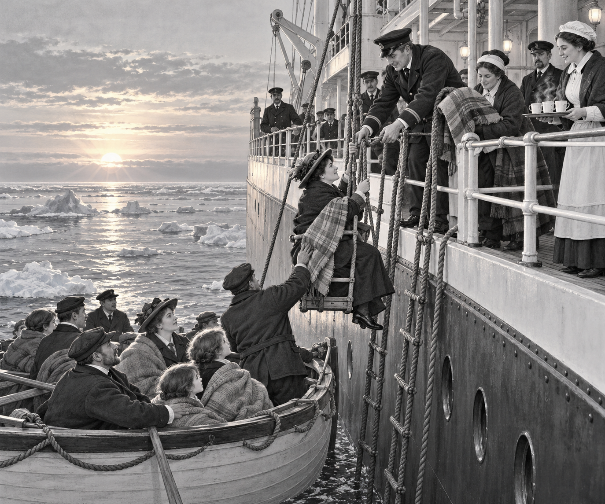

FACT
It was late on 14 April 1912.
The steamship Carpathia was crossing the North Atlantic.
Most of its passengers were asleep.
Harold Cottam sat beside the wireless set.
He was Carpathia's only wireless operator.
He was almost ready for bed.
Then his headphones crackled.
A message had come through the darkness.
It was from Titanic.
The great ship had struck an iceberg.
It needed help at once.
Harold rushed to tell the officers.
Captain Arthur Rostron heard the news.
He did not waste a moment.
“Turn the ship around,” he ordered.
Carpathia was about 58 miles away.
At its normal speed, the journey would take too long.
The engine crew worked hard below deck.
Carpathia pushed through the black sea faster than usual.
Wireless fact: Ships used dots and dashes to send messages by radio. The distress calls CQD and SOS both told other ships that help was needed.
The route was dangerous.
Ice had already damaged Titanic.
Carpathia might meet ice too.
Captain Rostron posted extra lookouts.
They stared into the night.
Every pale shape might be an iceberg.
Every patch of mist might hide danger.
The ship raced on.
But speed was only part of the rescue.
Everyone aboard began to prepare.
Sailors made rope ladders ready.
They fixed lights along the side of the ship.
Doctors prepared places to help cold or hurt people.
Stewards collected blankets.
Cooks made warm drinks and food.
Passengers offered spare clothes and beds.
The whole ship had become a rescue team.
At last, the sky began to brighten.
A lookout saw a green light over the water.
It was a flare from one of Titanic's lifeboats.
Captain Rostron slowed Carpathia.
The sea around them was dotted with ice.
Then a small wooden boat appeared.
It was crowded with tired survivors.
Carpathia stopped beside it.
Sailors lowered rope ladders and lifting chairs.
One person at a time came aboard.
Helping hands waited at the rail.
Warm blankets were wrapped around cold shoulders.
Hot drinks were carried across the deck.
More lifeboats arrived.
Then more.
Carpathia stayed until every lifeboat had been checked.
Rescue fact: Carpathia rescued 705 people from Titanic's lifeboats. It then carried them safely to New York.
The rescue could not undo the disaster.
Many people had been lost.
But Carpathia's crew had answered the call.
Harold had kept listening.
Captain Rostron had acted quickly.
Lookouts had watched for ice.
Cooks, doctors, sailors, stewards and passengers had all helped.
Carpathia had crossed a dark and dangerous sea.
By dawn, it had become a ship of hope.
1. What message did Harold Cottam hear?
2. Why did Captain Rostron post extra lookouts?
3. What did Carpathia's crew prepare for the survivors?